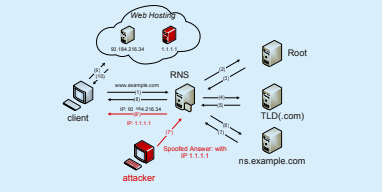
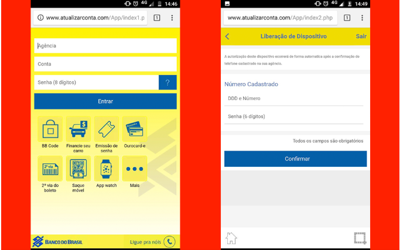

O Ataque
O envenenamento do cache do servidor DNS é um ataque que visa
a mudança de URL (Localizador uniforme de recursos) Web,
prejudicar alguém economicamente e/ou vazar dados,
informações pessoais e senhas.
O processo de envenenamento do cache ocorre durante o
mapeamento DNS. Para fazer o envenenamento, o atacante faz
uma requisição ao servidor DNS para saber o endereço IP de
um site específico. Se o servidor local não tiver o endereço
em seu cache, vai mandar o pedido para um servidor autoritário.
Nesse ponto, o atacante resolve o pedido do servidor DNS
através de um servidor autoritário falso implantado por ele,
fornecendo o endereço IP do site desejado e, além do IP do
site desejado, também envia endereços IP falsos de outros sites.

Figura 2 - Cache Poisoning
Retirado de: "DESIGN AND IMPLEMENTATION OF AN SDN-ENABLED DNS SECURITY FRAMEWORK"
Na figura 2, é possível observar como o envenenamento de cache
do DNS funciona. O cliente faz a requisição ao servidor(1),
que por não ter o IP do site desejado faz pedidos até descobrir
em que servidor existe o IP para o site desejado (2,3,4,5).
Nesse momento, ele faz um pedido para o servidor autoritativo
que contém o endereço do site desejado (6), mas ao invés de
receber a resposta do servidor autoritário verdadeiro,
o servidor autoritário do atacante responde à requisição,
dando um endereço falso (7 vermelho). Esse endereço falsificado
é, em seguida, encaminhado para o cliente que fez a requisição
(8 vermelho).
Um ataque é considerado bem sucedido quando o servidor DNS
aceita essa resposta falsificada recebida. Assim, caso
alguém faça um pedido por um desses domínios específicos
será redirecionado para o site de IP falso, que é feito com o
intuito de parecer muito similar, quando não idêntico ao
original, em vez de ser redirecionado para o verdadeiro.
Nesse site falso montado pelo atacante, podem ser coletadas
informações que a vítima inserir, desde senhas até
dados pessoais.

Figura 1 - Disponível em: https://exame.abril.com.br/tecnologia/
Na figura 1, podemos observar um site que, à primeira vista,
pode ser confundido com o site verdadeiro do Banco do Brasil.
Entretanto, quando analisado de forma cuidadosa, é possível
perceber o uso de linguagem coloquial em "Ligue pra nóis",
o que evidencia a falsificação da página.
Embora tenham sido propostos e desenvolvidos métodos
contra o envenenamento do cache, eles não se provaram tão
eficazes. Um desses métodos é o DNSSEC, que iria requerer
uma mudança na arquitetura do DNS, o que torna essa proposta
difícil de ser popularizada e, consequentemente, utilizada.
Além disso, essa alternativa não previne completamente os
ataques e não propõem métodos para restaurar o cache após o
ataque.
Formas de mitigar o ataque
Uma das propostas para mitigar o impacto causado pelo
envenenamento de cache do servidor DNS seria recuperar parte
do cache do servidor.
Como os servidores DNS conservam as respostas falsas de IP
enviadas pelo atacante, o cache do servidor seria primeiramente
limpo. Após o cache ser esvaziado, uma lista contendo
resoluções de nomes de sites frequentemente visitados
(como Google, Facebook e Youtube) será carregada no cache do
servidor DNS, sem que exista a necessidade de um pedido ser
feito para esse site específico.
Outra proposta seria agir para prevenir o ataque:
Uma proposta para prevenir ataques de envenenamento de cache é uma resposta do pedido DNS vinda de vários servidores DNS, não de apenas um único. Esse método, ao qual os pesquisadores atribuíram o nome de Multi-DNS(MDNS), além de aumentar a dificuldade de sucesso no ataque, irá aumentar também os custos para realizá-lo , pois teria que comprometer diversos servidores ao mesmo tempo com a mesma resposta.
Para essa alternativa, é proposto que sejam utilizados N servidores DNS (N ≥ 3), que tenham diferentes softwares de DNS e diferentes sistemas operacionais. Embora eles tenham diferenças, eles precisarão gerar a mesma resposta para um mesmo pedido DNS.
Com o intuito de escolher os servidores a serem utilizados, o MDNS terá três módulos virtuais de funções: o agendador, o que toma as decisões e o purificador.
A função do agendador é escolher um certo número de servidores DNS (N ≥ 3) para serem ativos e receberem os pedidos DNS. Os casos em que a lista de servidores ativos seria trocada seria quando se passa um tempo determinado ou quando uma mensagem de alerta é recebido do que toma as decisões.
O decididor tem a função de julgar se os DNSs recebidos são legítimos ou falsificados. Para fazer essa escolha, ele parte do pressuposto de que é muito difícil para os atacantes comprometerem a maioria dos servidores DNS ao mesmo tempo e gerando uma mesma resposta. Para classificar as respostas, o decididor irá ver se as várias respostas recebidas são iguais e, em caso positivo, elas serão consideradas seguras e válidas. Caso contrário, o agendador irá ser notificado para mudar sua lista de servidores e o purificador será acionado.
O purificador tem como atribuição verificar os servidores que dão uma resposta diferente dos demais. Se for a primeira vez que o esse determinado servidor manda uma resposta diferente, seu cache será limpo, caso seja uma recorrência, ele será reiniciado. Depois do cache ser limpo ou servidor reiniciado, uma notificação será mandada para os outros módulos indicando que ele pode ser usado novamente.
Como para responder à requisição DNS várias respostas de servidores são necessárias, um problema relacionado à atraso irá surgir. Para mitigar essa situação, se o servidor receber um determinado número pré estabelecido de respostas até um tempo também arbitrário, a resposta ao pedido é enviada.